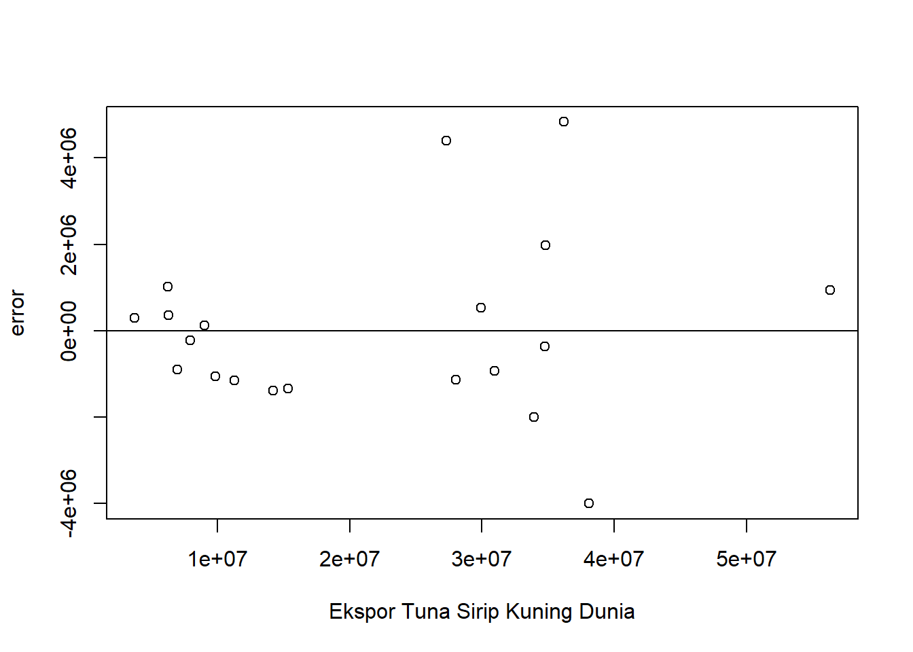

setwd("D:/METOPEL UAS/TATA METOPEL")
library(readxl)
library(tidyverse)
library(kableExtra)Pengaruh Ekspor Tuna Sirip Kuning ke Jepang terhadap Total Nilai Ekspor Tuna Indonesia.
Metode Penelitian Politeknik APP Jakarta

1 Pendahuluan
1.1 Latar belakang
Indonesia, sebagai produsen ikan tuna terbesar di dunia, memiliki komoditas ekspor utama berupa tuna sirip kuning. Negara-negara tujuan ekspor utama untuk komoditas ini adalah Jepang dan Amerika Serikat. Pada tahun 2021, ekspor ikan tuna sirip kuning ke Jepang mencapai US$ 170 juta, sementara ke Amerika mencapai US$ 115 juta.
Keunggulan komoditas tuna sirip kuning terletak pada nilai ekonominya yang tinggi, potensi pemasaran yang luas, dan siklus hidup yang cepat. Selain itu, tuna sirip kuning dikenal memiliki rasa yang lebih manis dan tekstur daging yang empuk. Peluang ekspor tuna sirip kuning semakin terbuka lebar dengan adanya platform perdagangan elektronik atau e-commerce. Diharapkan, hal ini dapat memacu pelaku UKM lainnya untuk lebih bersemangat dalam memasarkan produknya ke pasar internasional.
Dalam konteks penelitian, metode regresi sering digunakan untuk menganalisis hubungan antara variabel-variabel yang mempengaruhi ekspor, seperti produksi, konsumsi, harga, dan faktor-faktor lainnya.
Hasil analisis ini diharapkan dapat memberikan gambaran tentang faktor-faktor apa saja yang mempengaruhi permintaan tuna sirip kuning di pasar internasional, sehingga dapat membantu dalam merumuskan strategi ekspor yang tepat.
Dengan demikian, melalui analisis penelitian berikut dengan metode regresi, kita dapat memahami lebih dalam tentang dinamika ekspor tuna sirip kuning dari Indonesia ke negara tujuan ekspor utama seperti Jepang dan Amerika, serta peluang yang dapat dicapai.
1.2 Ruang lingkup
Ruang lingkup penelitian ini mencakup beberapa aspek penting. Pertama, penelitian ini akan fokus pada ekspor tuna sirip kuning dari Indonesia ke negara tujuan ekspor utama, yaitu Jepang dan Amerika Serikat. Ini melibatkan analisis data ekspor tahunan, khususnya pada nilai ekspor.
Penelitian ini akan menggunakan metode regresi untuk menganalisis hubungan antara variabel-variabel yang mempengaruhi ekspor. Hasil analisis ini diharapkan dapat memberikan gambaran tentang faktor-faktor apa saja yang mempengaruhi permintaan tuna sirip kuning di pasar internasional, sehingga dapat membantu dalam merumuskan strategi ekspor yang tepat.
1.3 Rumusan masalah
Berikut adalah beberapa rumusan masalah yang dapat diangkat berdasarkan latar belakang penelitian tersebut:
Bagaimana perkembangan ekspor tuna sirip kuning dari Indonesia ke Jepang dan Amerika Serikat dalam kurun waktu tertentu?
Bagaimana hubungan antara variabel-variabel yang mempengaruhi nilai total ekspor tuna Indonesia?
Seberapa besar pengaruh 2 Negara tujuan ekspor utama Tuna Sirip Kuning Indonesia terhadap Total Nilai Ekspor Tuna Indoensia.
Rumusan masalah ini diharapkan dapat membantu dalam merancang penelitian yang sistematis dan terarah untuk memahami lebih dalam tentang dinamika ekspor tuna sirip kuning dari Indonesia.
1.4 Tujuan dan manfaat penelitian
Berdasarkan rumusan masalah yang telah disebutkan, berikut adalah tujuan dan manfaat penelitian dari sisi mahasiswa:
Tujuan Penelitian: 1. Untuk memahami perkembangan ekspor tuna sirip kuning dari Indonesia ke Jepang dan Amerika Serikat dalam kurun waktu tertentu.
Untuk mengetahui hubungan antara variabel-variabel yang mempengaruhi nilai total ekspor tuna Indonesia.
Untuk mengetahui seberapa besar pengaruh 2 Negara tujuan ekspor utama Tuna Sirip Kuning Indonesia terhadap Total Nilai Ekspor Tuna Indonesia.
Untuk memenuhi tugas akhir mata kuliah metode penelitian.
Manfaat Penelitian:
Penelitian ini dapat membantu mahasiswa dalam memahami lebih dalam tentang dinamika ekspor tuna sirip kuning dari Indonesia.
Hasil penelitian ini dapat digunakan sebagai bahan referensi untuk penelitian selanjutnya yang berkaitan dengan ekspor tuna sirip kuning.
Penelitian ini dapat membantu mahasiswa dalam mengaplikasikan teori yang telah dipelajari di kelas, khususnya yang berkaitan dengan metode penelitian khususnya regresi linear.
Penelitian ini dapat membantu mahasiswa dalam meningkatkan keterampilan analisis dan pemecahan masalah.
Penelitian ini dapat membantu mahasiswa dalam mempersiapkan diri untuk menjadi profesional di bidang yang berkaitan dengan ekspor dan perdagangan internasional.
1.5 Package
2 Studi pustaka
Ekspor adalah suatu kegiatan ekonomi menjual produk dalam negeri ke pasar di luar negeri, sedangkan impor merupakan kegiatan ekonomi membeli produk luar negeri untuk keperluan atau dipasarkan di dalam negeri (Murni,2009:208).
Suatu negara melakukan kegiatan ekspor karena untuk memenuhi kebutuhan barang dan jasa Negara lain. Keuntungan melakukan ekspor menurut Sukirno (2010:205) adalah:
Memperluas Pasar Kegiatan ekspor merupakan cara untuk memasarkan produk-produk dalam negeri ke luar negeri. Adanya kegiatan ekspor, produk yang dihasilkan di dalam negeri tidak hanya dikonsumsi oleh penduduk dalam negeri.
Menambah Devisa Negara Kegiatan ekspor memugkinkan eksportir dalam negeri memasarkan produknya ke luar negeri. Transaksi ekspor ini dapat menambah devisa Negara yang merupakan salah satu sumber penerimaan Negara.
Memperluas Lapangan Kerja Kegiatan ekspor akan membuka lapangan pekerjaan bagi masyarakat. Dengan semakin banyaknya ekspor maka produksi yang dihasilkan akan semakin banyak. Peningkatan jumlah produksi ini akan meningkatkan penyerapan tenaga kerja.
“Exports are domestically produced goods and services that are sold abroad”, Ekspor mempunyai peran strategis, terlebih dalam memberikan kontribusi terhadap pembangunan ekonomi suatu negara dan cadangan devisa negara’’, (Mankiw, 2012:272).
Nilai ekspansi ekspor juga menentukan besaran penyerapakan tenaga kerja. Ketika nilai ekspor meningkat, dapat diartikan permintaan barang dari negara lain mengalami peningkatan. Jika ekspor menurun sebaliknya dapat diartikan permintaan negara lain terhadap barang ekspor mengalami pelemahan. Ekspor merupakan injeksi masuknya aliran pendapatan seperti halnya investasi.
Sumberdaya ikan pelagis besar di Wilayah Pengelolaan Perikanan (WPP) 573 merupakan salah satu komoditas penting perikanan Indonesia yang sudah dieksploitasi sejak lama. Tuna sirip kuning (Thunnus albacares) merupakan hasil tangkapan terbanyak dibandingkan dengan jenis tuna lainnya di Indonesia. Hasil tangkapan tuna di Indonesia secara keseluruhan pada kurun waktu 2004 hingga 2011 mencapai 1.297.062 ton, dari jumlah ini sebanyak 69% hasil tangkapan adalah tuna sirip kuning (Direktorat Jenderal Perikanan Tangkap, 2012).
Tingginya permintaan tuna sirip kuning di pasar dunia dalam beberapa tahun terakhir berdampak terhadap pemanfaatan yang makin intensif. Hal ini membuat ketersediaan stok tuna sirip kuning (yellowfin tuna) di Samudra Hindia diperkirakan pada saat ini, dalam keadaan lebih tangkap (IOTC, 2016).
Kondisi ini akan menjadi lebih buruk lagi jika sumber daya ini tidak dikelola dengan lebih baik. Oleh karena itu, pengelolaan secara tepat dan bertanggungjawab penting dilakukan untuk melindungi spesies tuna. Salah satunya dengan mengkaji alat tangkap yang digunakan.
Tuna sirip kuning merupakan salah satu hasil tangkapan utama dari nelayan pancing ulur yang beroperasi di perairan sekitar rumpon Muhammad & Barata, (2012).
3 Metode penelitian
3.1 Data
| tahun | dunia | jepang | amerika |
|---|---|---|---|
| 2003 | $ 56.283.000,00 | $ 44.638.000,00 | $ 1.512.000,00 |
| 2004 | $ 34.815.000,00 | $ 26.528.000,00 | $ 1.352.000,00 |
| 2005 | $ 27.311.000,00 | $ 18.432.000,00 | $ 1.813.000,00 |
| 2006 | $ 29.918.000,00 | $ 23.601.000,00 | $ 2.061.000,00 |
| 2007 | $ 36.186.000,00 | $ 24.950.000,00 | $ 3.256.000,00 |
| 2008 | $ 34.725.000,00 | $ 28.155.000,00 | $ 2.286.000,00 |
| 2009 | $ 30.925.000,00 | $ 25.314.000,00 | $ 3.492.000,00 |
| 2010 | $ 38.104.000,00 | $ 33.640.000,00 | $ 3.132.000,00 |
| 2011 | $ 33.929.000,00 | $ 28.663.000,00 | $ 3.112.000,00 |
| 2012 | $ 28.008.000,00 | $ 23.068.000,00 | $ 3.761.000,00 |
| 2013 | $ 15.370.000,00 | $ 13.618.000,00 | $ 857.000,00 |
| 2014 | $ 14.251.000,00 | $ 12.692.000,00 | $ 1.173.000,00 |
| 2015 | $ 7.963.000,00 | $ 6.828.000,00 | $ 464.000,00 |
| 2016 | $ 6.335.000,00 | $ 4.916.000,00 | $ 1.111.000,00 |
| 2017 | $ 3.761.000,00 | $ 3.029.000,00 | $ 431.000,00 |
| 2018 | $ 9.864.000,00 | $ 9.076.000,00 | $ 265.000,00 |
| 2019 | $ 9.069.000,00 | $ 7.414.000,00 | $ 623.000,00 |
| 2020 | $ 11.306.000,00 | $ 10.258.000,00 | $ 507.000,00 |
| 2021 | $ 7.015.000,00 | $ 6.684.000,00 | $ 90.000,00 |
| 2022 | $ 6.302.000,00 | $ 4.310.000,00 | $ 1.371.000,00 |
Penelitian ini menggunakan data time series yang kemudian diproses menggunakan metode regresi multivariat untuk melihat hubungan antara besaran nilai ekspor tuna sirip kuning ke jepang (X) terhadap total nilai Ekspor Ikan Tuna sirip kuning Indonesia (Y) yang dapat dilihat dari ekspor ke Amerika (S).
3.2 Metode analisis
Metode yang dipilih adalah regresi Multivariat dengan lebih dari satu variabel independen. Penelitian ini merbaksud mencari hubungan antara Inflasi dengan Ekspor Ikan Filet dan Tepung Ikan. Spesifikasi yang dilakukan adalah:
\[ Y=\beta_0 + \beta_1 X+\beta_2 S+\mu. \] di mana \(Y\)=PDB perkapita, \(X\) = FOB Ekspor Ke Jepang dan \(S\)= Ekspor Ke Amerika.
4 Pembahasan
4.1 Pembahasan masalah
4.1.1 Plot dan Data
#impor dataset
read_excel("tuna.xlsx")# A tibble: 20 × 4
tahun dunia jepang amerika
<dbl> <dbl> <dbl> <dbl>
1 2003 56283000 44638000 1512000
2 2004 34815000 26528000 1352000
3 2005 27311000 18432000 1813000
4 2006 29918000 23601000 2061000
5 2007 36186000 24950000 3256000
6 2008 34725000 28155000 2286000
7 2009 30925000 25314000 3492000
8 2010 38104000 33640000 3132000
9 2011 33929000 28663000 3112000
10 2012 28008000 23068000 3761000
11 2013 15370000 13618000 857000
12 2014 14251000 12692000 1173000
13 2015 7963000 6828000 464000
14 2016 6335000 4916000 1111000
15 2017 3761000 3029000 431000
16 2018 9864000 9076000 265000
17 2019 9069000 7414000 623000
18 2020 11306000 10258000 507000
19 2021 7015000 6684000 90000
20 2022 6302000 4310000 1371000dat <- read_excel("tuna.xlsx")
kbl(dat) %>%
kable_styling(bootstrap_options = c("striped", "hover", "condensed", "responsive"))| tahun | dunia | jepang | amerika |
|---|---|---|---|
| 2003 | 56283000 | 44638000 | 1512000 |
| 2004 | 34815000 | 26528000 | 1352000 |
| 2005 | 27311000 | 18432000 | 1813000 |
| 2006 | 29918000 | 23601000 | 2061000 |
| 2007 | 36186000 | 24950000 | 3256000 |
| 2008 | 34725000 | 28155000 | 2286000 |
| 2009 | 30925000 | 25314000 | 3492000 |
| 2010 | 38104000 | 33640000 | 3132000 |
| 2011 | 33929000 | 28663000 | 3112000 |
| 2012 | 28008000 | 23068000 | 3761000 |
| 2013 | 15370000 | 13618000 | 857000 |
| 2014 | 14251000 | 12692000 | 1173000 |
| 2015 | 7963000 | 6828000 | 464000 |
| 2016 | 6335000 | 4916000 | 1111000 |
| 2017 | 3761000 | 3029000 | 431000 |
| 2018 | 9864000 | 9076000 | 265000 |
| 2019 | 9069000 | 7414000 | 623000 |
| 2020 | 11306000 | 10258000 | 507000 |
| 2021 | 7015000 | 6684000 | 90000 |
| 2022 | 6302000 | 4310000 | 1371000 |
reg1<-lm(dunia~jepang+amerika,data=dat)dat$m<-resid(reg1)
plot(dat$dunia,dat$m,xlab="Ekspor Tuna Sirip Kuning Dunia",ylab="error")
abline(h=0) # membuat garis horizontal di y=0dat$m<-resid(reg1)
plot(dat$jepang,dat$m,xlab="Ekspor Tuna Ke Jepang",ylab="error")
abline(h=0)
dat$m<-resid(reg1)
plot(dat$amerika,dat$m,xlab="Eskpor Tuna Ke Amerika",ylab="error")
abline(h=0)
4.2 Analisis masalah
Hasil regresinya adalah
reg1<-lm(data=dat,dunia~jepang+amerika) #Y~X+S
summary(reg1)
Call:
lm(formula = dunia ~ jepang + amerika, data = dat)
Residuals:
Min 1Q Median 3Q Max
-3997438 -1135834 -293408 633784 4834432
Coefficients:
Estimate Std. Error t value Pr(>|t|)
(Intercept) -3.989e+05 9.266e+05 -0.431 0.672
jepang 1.241e+00 5.787e-02 21.437 9.6e-14 ***
amerika 2.454e-01 5.684e-01 0.432 0.671
---
Signif. codes: 0 '***' 0.001 '**' 0.01 '*' 0.05 '.' 0.1 ' ' 1
Residual standard error: 2146000 on 17 degrees of freedom
Multiple R-squared: 0.9809, Adjusted R-squared: 0.9786
F-statistic: 435.6 on 2 and 17 DF, p-value: 2.493e-15Dari hasil regresi yang di tampilkan, dimana R-squared menunjukan hasil 0.9809, yang artinya angka tersebut mengandung makna bahwa X dan S secara simultan berpengaruh terhadap Y sebesar 98,09%. sedangkan sisanya dipengaruhi oleh variabel lain di luar persamaan ini.
Kemudian, besaran nilai yang tertera pada nilai ekspor ke Jepang dapat diartika setiap nilai ekspor ke jepang naik sebesar 1 USD maka akan mengakibatkan kenaikan total nilai ekspor tuna sebesar 1,241 USD berpengaruh positif sangat signifikan.
pada variabel berikutnya, yakni ekspor tuna ke Amerika dikatan bahwa setiap kenaikan ekspor tuna ke Amerika sebesar 1 USD, akan mengakibatkan total nilai ekspor tuna Indonesia juga akan ikut naik sebesar 2,454 USD.
5 Kesimpulan
Kesimpulan dari analisis data ini adalah Indonesia perlu meningkatkan pangsa pasar komoditas tuna keseluruhan ke berbagai negara tidak terbatas pada Jepang dan Amerika saja yang memang sebagai partner utama dalam ekspor komoditas ini dan terbukti berpengaruh positif pada peningkatan total nilai ekspor komoditas ini.
Dan tiak terbatas pada komoitas Tuna Sirip Kuning saja, melainkan pada keseluruhan komoditas Tuna lainnya untuk dapat memaksimalkan potensi laut yang dimiliki Indonesia yang kaya akan sumberdaya perikanannya.
Dengan demikian dari Komoditas laut ini khususnya tuna, komoditas unggulan Indonesia lainnya akan lebih dikenal di pasar global sehingga dapat mempengaruhi neraca perdagangan Indonesia ke arah yang lebih positif.
6 Referensi
Murni, A. 2009. Ekonomika Makro. Bandung: PT Refika Aditama
Sukirno, Sadono. 2010. Makro Ekonomi Teori Pengantar. Edisi ketiga. Jakarta: Rajawali Pers
Mankiw, N. G. 2007. Makroekonomi. Edisi keenam. Jakarta: Erlangga.
IOTC (Indian Ocean Tuna Commission). (2016). Report of the Twelve Session of the IOTC Working Party on Data Collection & Statistic. Victoria, Seychelles. 28– 30 November 2016. 37
Direktorat Jenderal Perikanan Tangkap. (2012). Statistik Perikanan Tangkap Indonesia 2011. Kementerian Kelautan dan Perikanan, Jakarta. 190 pp
Muhammad, N., & Barata,A. (2012). Struktur Ukuran Ikan Tuna sirip kuning (Thunnus Albacares) yang Tertangkap Pancing Ulur di Sekitar Rumpon Samudera Hindia Selatan Bali Dan Lombok. BAWAL, 4(3), 161- 167